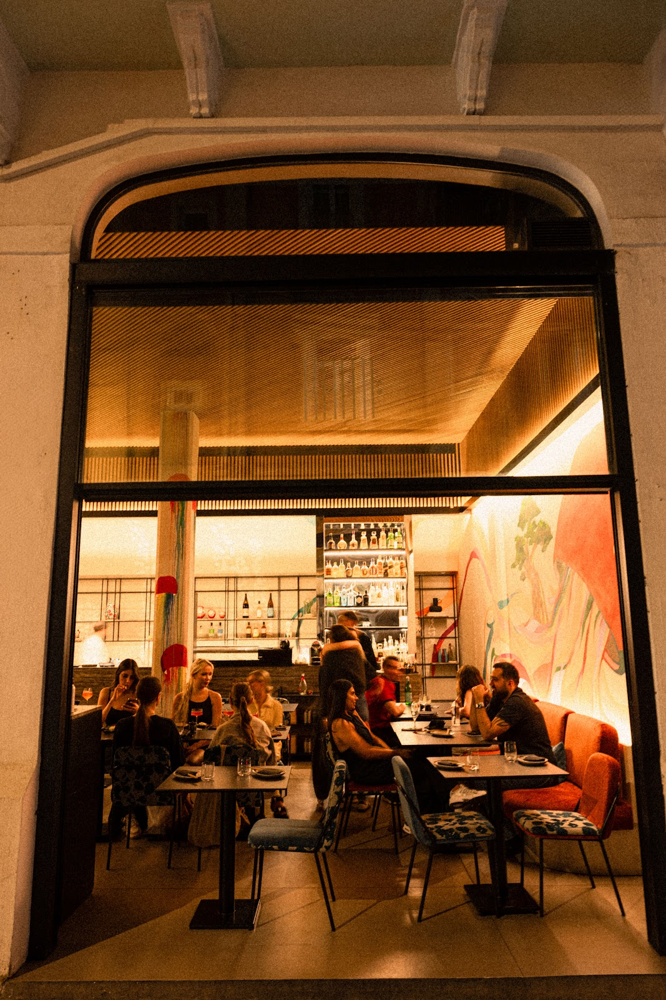
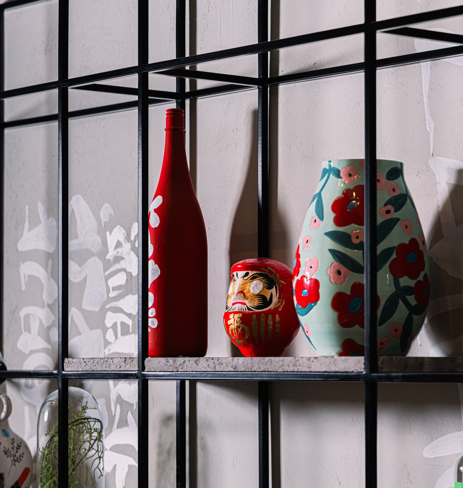
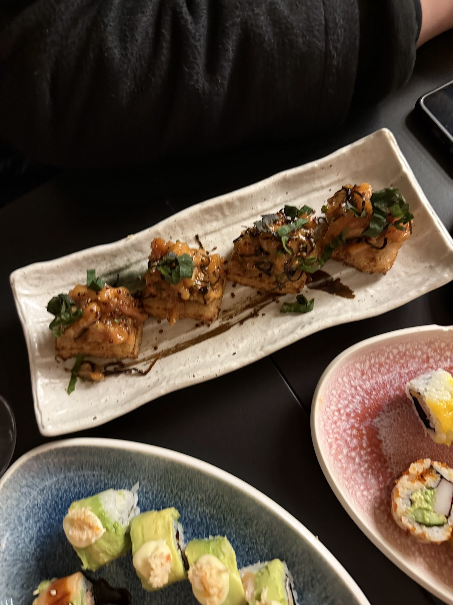

01







The sushi experience was truly exceptional,each roll delivered its own character, to the point where choosing a favorite became impossible.Lifewithjad
Food is exceptional, the best sushi spot for me. Everything is fresh and tastes good. Also one of the few places that serve you real wasabi.Elias Dagher
Gouraud, Beirut, Lebanon
+961 76 611 633